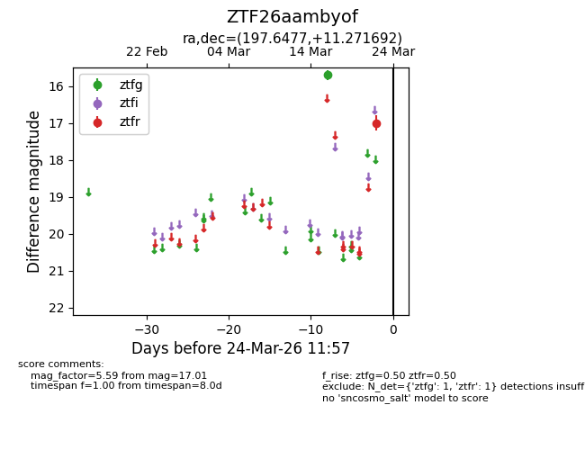
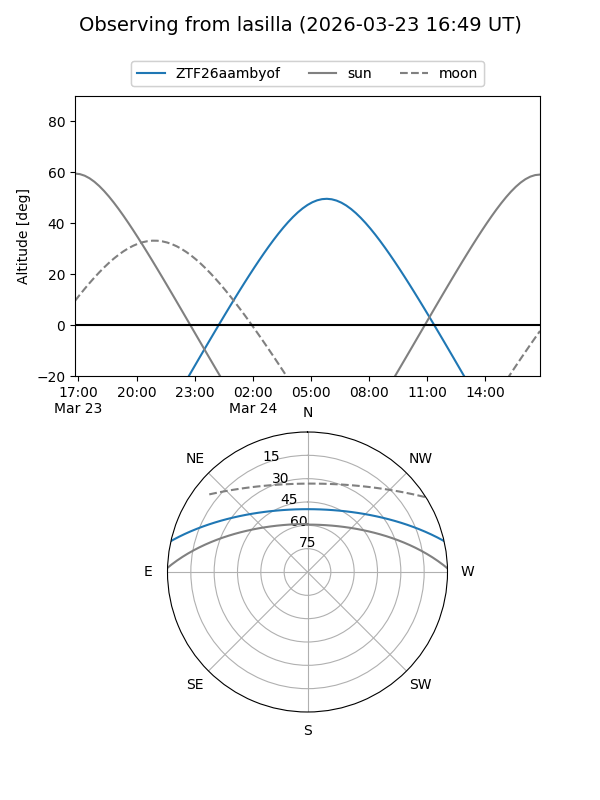
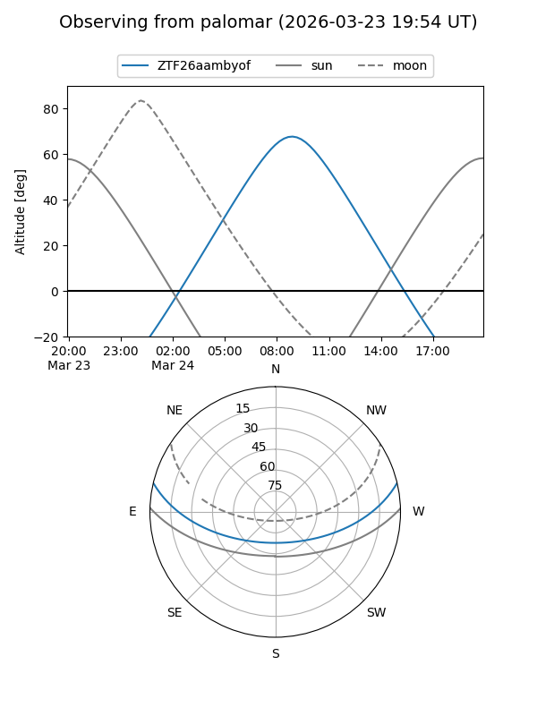

ZTF26aambyof
Target ZTF26aambyof at 2026-03-24 12:00
Aliases and brokers:
FINK: link
Lasair: link
ALeRCE: link
alt names
ZTF26aambyof (ztf,fink_ztf)
Coordinates:
equatorial (ra, dec) = 197.6477,+11.27169
equatorial (HMS+DMS) = 13:10:35.44,+11:16:18.09
galactic (l, b) = (319.7011,+73.51674)
Flags:
Photometry:
last ztfg=15.70, ztfr=17.01
1 ztfg, 1 ztfr detections
Lightcurve

Visibility


Additional plots